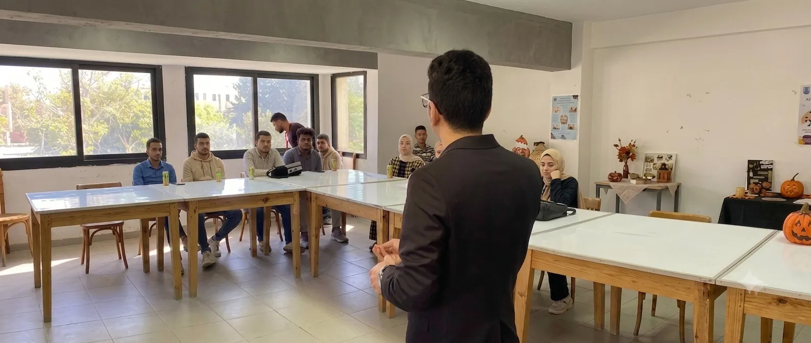
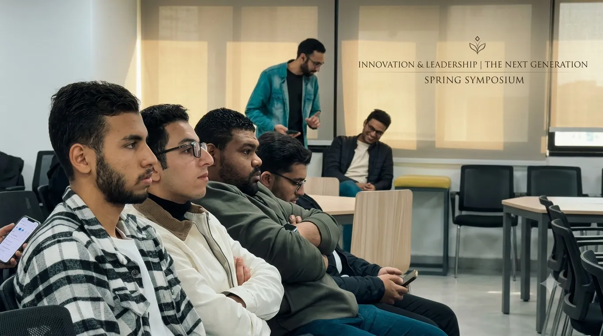
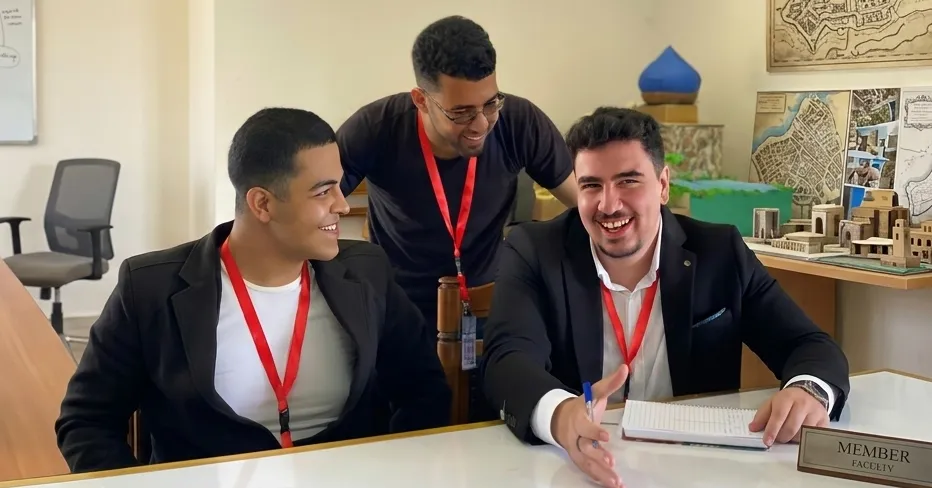
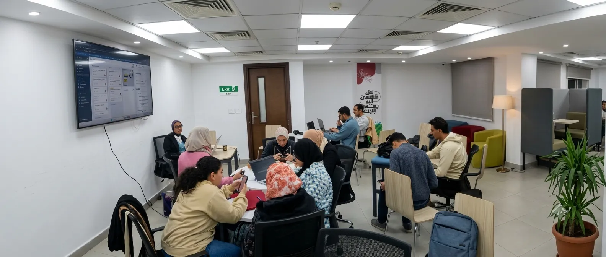
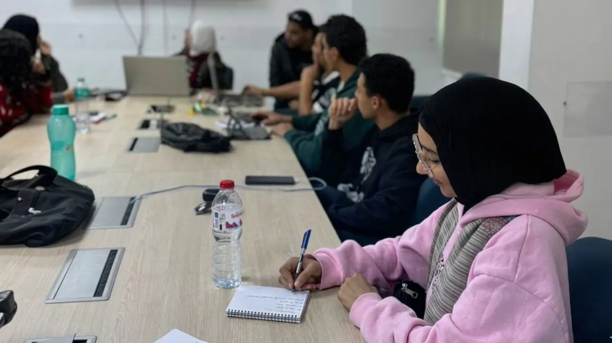

انطلقنا كمجموعة طموحة تجمع الشغوفين في مساحة واحدة يتعلمون فيها ويتطورون معًا.

من أول تجمع بدأنا بناء الفريق، وحوّلنا الحماس إلى خطوات منظمة على أرض الواقع.

توسّعت الأنشطة وتنوّعت المسارات، وأصبح لكل عضو مساحة واضحة للتأثير والمساهمة.

نواصل اليوم كتابة فصل أكبر لنبني مجتمعًا متكاملًا يصنع أثرًا حقيقيًا نحو مستقبل أفضل.

كل فعالية كانت خطوة جديدة لبناء أثر أعمق يفتح آفاقًا جديدة للتعلم والتطوع والقيادة.

رحلتنا القادمة تركز على توسيع المجتمع، دعم المواهب، وصناعة تجارب أقوى لكل عضو جديد.